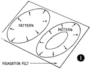
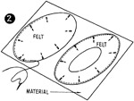
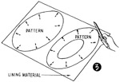
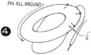

1952—How to Make Hats
by Ruby Carnahan
Beret Made of Wool Material
BERET MADE OF WOOL MATERIAL
Use pattern on page 91
Place pattern on a fold of paper and cut pattern double.
Cut two brim patterns, one a solid pattern for top beret brim, and one brim pattern for facing, with headsize cut out on correct headsize line, marked on pattern, either small, medium or large.
Place headband pattern on a fold of paper and cut length of headband to correspond with beret pattern headsize.
Mark back and front of pattern on brims and on band.
MATERIAL REQUIRED
- 1/3 yard of foundation felt. Shrink felt before using.
- 1/3 of a yard of silk lining
- 1/3 yard of wool material
- 3/4 of a yard of headsize ribbon
- Strip of buckram 1" x 24"
CUTTING MATERIALS
(Illus. 1) Place brim pattern on foundation felt, mark around pattern on felt and cut out felt.
(Illus. 2) Baste felt brims to material and cut out material.
(Illus. 3) Place brim patterns on lining material and cut out lining.
Place headband pattern on material and cut out material.
SEWING BERET TOGETHER
(Illus. 4) Pin brims together on wrong side and baste a 1/4" seam around brim edge and stitch.
Turn Beret to right side. Use a paper rope pad to fit inside beret brim edge.
Steam edge of beret thoroughly over this paper pad, remove paper pad when beret is dry.
Baste lining brim pieces together and slip into Beret and baste together around headsize.
(Illus. 5) Join ends of headband together. Stitch and press seam open. Fold lengthwise and press. Baste over buckram strip.
Measure headband into quarters and mark. Measure Beret headsize into quarters and mark.
Pin seam on band to back of Beret.
Match marking on band with markings on Beret headsize, pin and baste to Beret.
Finish headsize with a headband.
See instructions for Beret headband on page 46.